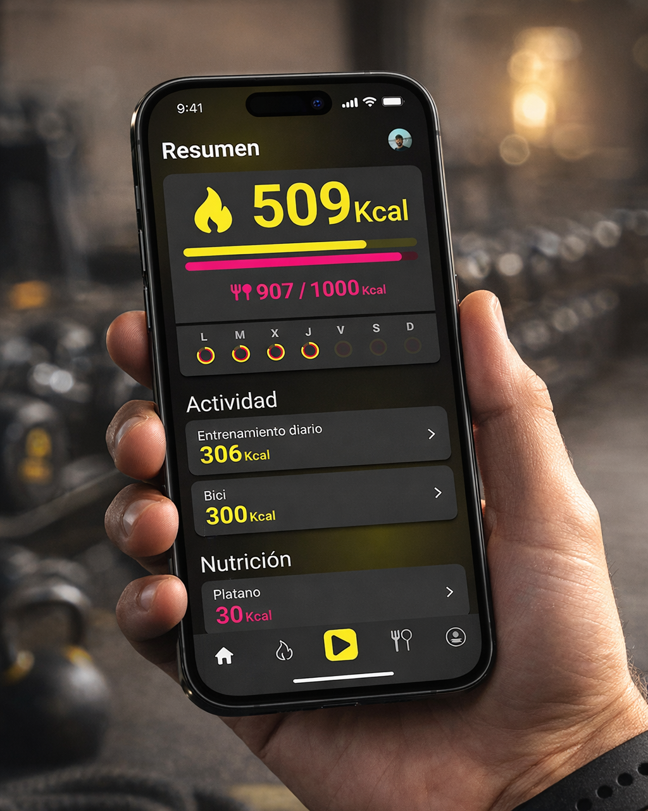
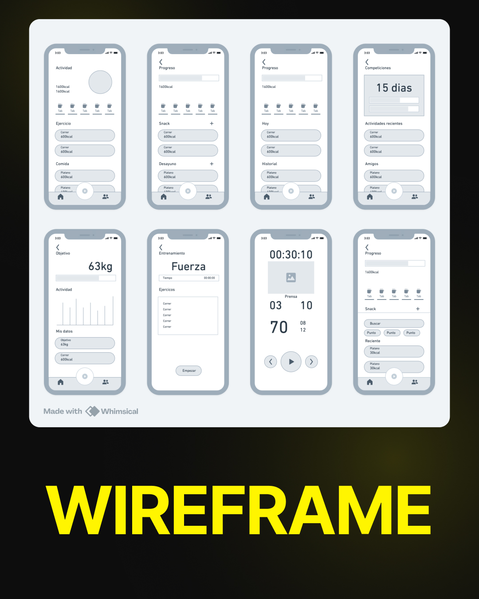
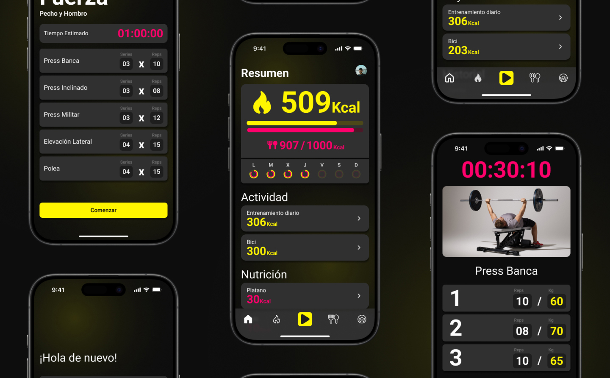
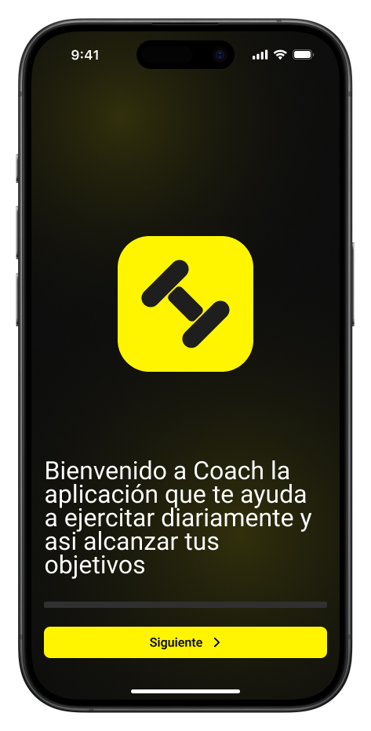
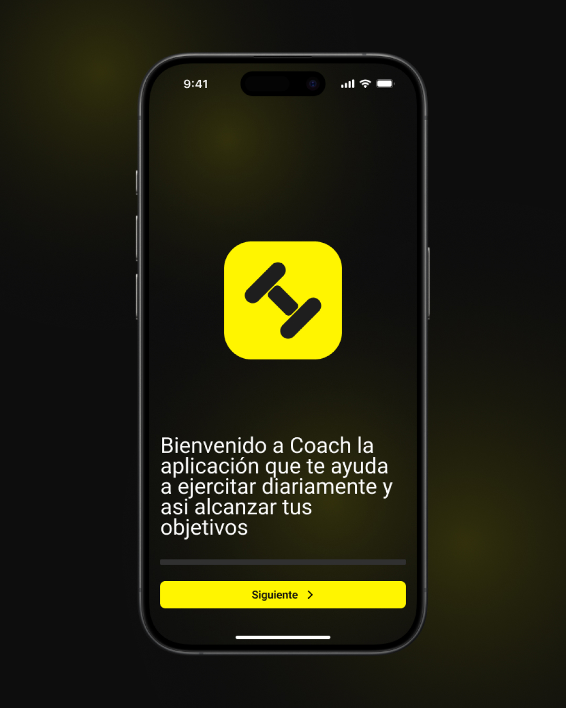
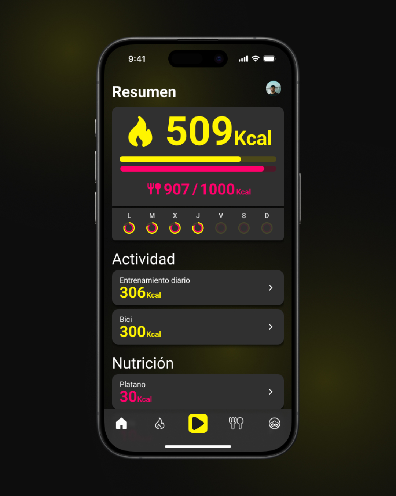
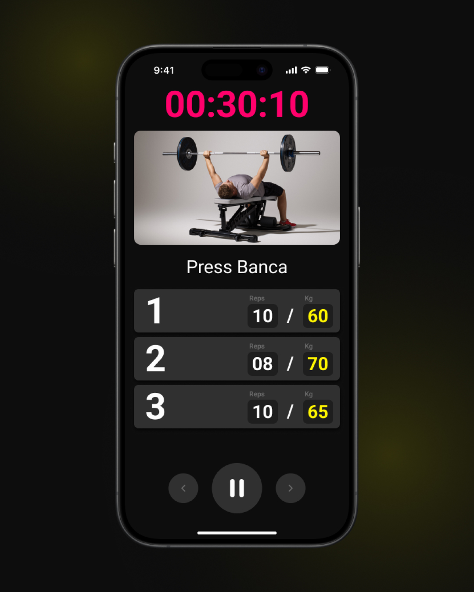
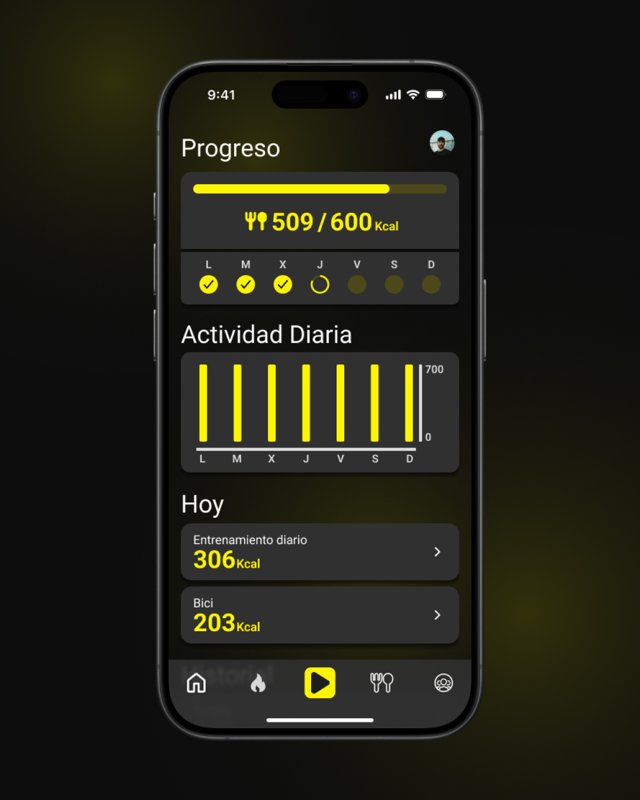
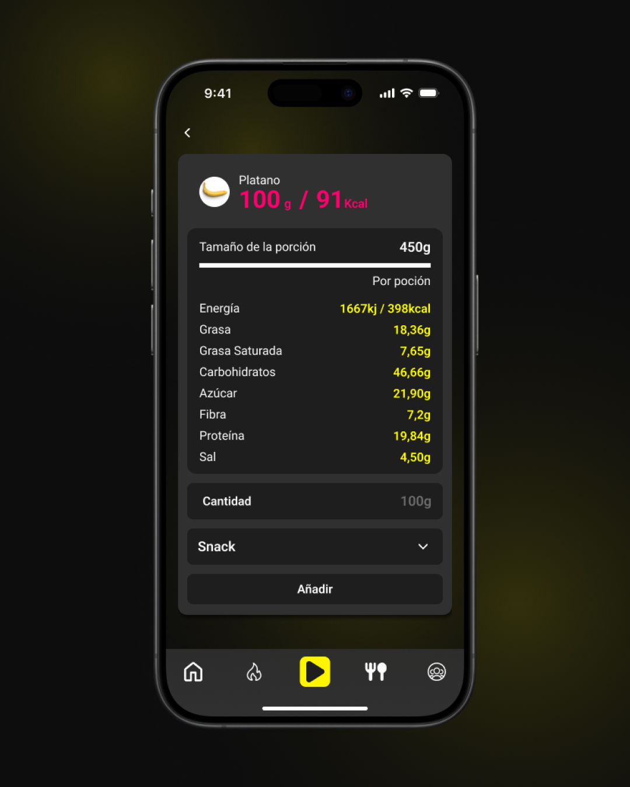
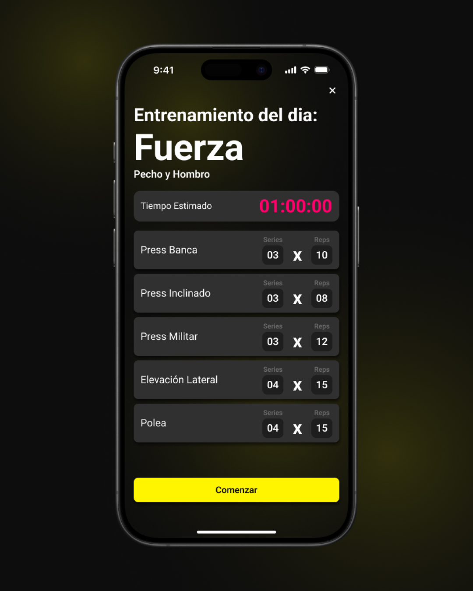

Investigación
Objetivos del producto.
Antes de abrir Figma, definimos qué tenía que conseguir Coach a nivel de negocio y de usuario, y cuáles eran los puntos críticos de la competencia.




El reto
El ejercicio pedía diseñar una app móvil de principio a fin: research, arquitectura, sistema y UI. Elegí fitness y nutrición porque es un sector saturado y ruidoso — la mayoría de apps prometen disciplina militar y le hablan al usuario como si tuviera 25 años, dos horas libres y un gimnasio en casa. Nada de eso es la realidad.
El research dejó claro lo evidente: la gente abandona estas apps porque les recuerdan lo que no están haciendo. Coach se construyó alrededor de la idea contraria — encajar la rutina del usuario, no imponerla. Cada pantalla tenía que quitar fricción, no añadirla. Una jerarquía clara, un onboarding que pregunta antes de exigir, y un dashboard que prioriza el "qué toca hoy" antes que el "cuánto te falta".
Investigación
Antes de abrir Figma, definimos qué tenía que conseguir Coach a nivel de negocio y de usuario, y cuáles eran los puntos críticos de la competencia.


Decisiones clave
01
Onboarding que pregunta, no exige.
El usuario decide cuánto tiempo tiene, qué objetivos persigue y qué tipo de plan quiere. La app se adapta a él — no al revés.
02
Home centrada en hoy.
La primera pantalla muestra lo que toca ahora, no estadísticas acumuladas. Sin gráficas que recuerden lo que no se hizo.
03
Una sola acción primaria por pantalla.
Cada vista sabe qué le toca. Si no aporta a la siguiente acción, se mueve a un segundo nivel. Menos ruido, menos decisiones que tomar.
Producto final
Onboarding, dashboard, planes de entrenamiento, nutrición y sesión activa. Mismo lenguaje visual en todas, pero con prioridades distintas según lo que el usuario espera ver al abrir.







Proceso
01
Research
Análisis de competencia, perfiles de usuario y mapa de fricciones. Por qué la gente entra, por qué se va.
02
Wireframes
Arquitectura, flujos y prioridades en baja fidelidad. Decisiones antes de pixel.
03
Design system
Tipografía, color, componentes y estados. Coherencia obligatoria entre pantallas.
04
UI final
Pantallas en alta fidelidad, prototipo navegable y handoff listo.